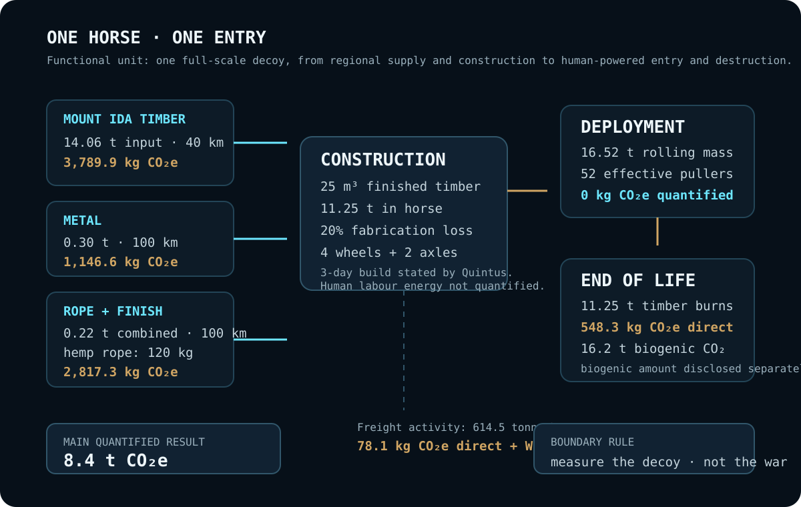
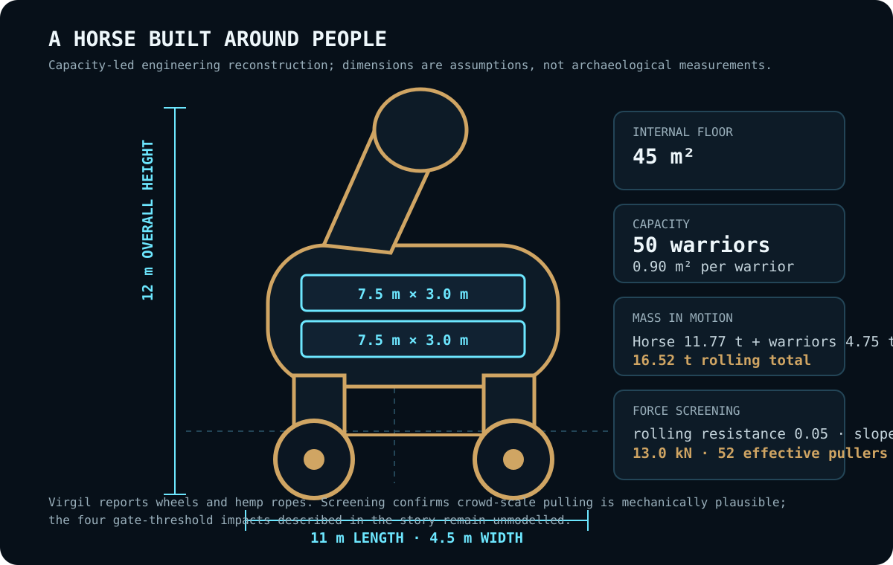
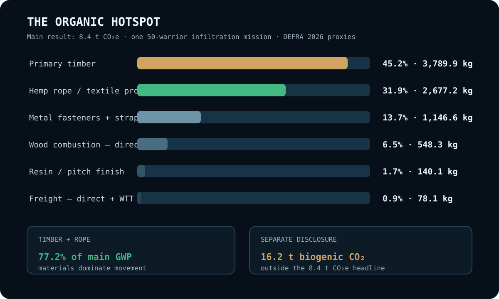

EPISODE #38 · MYTHS & LEGENDS
Trojan Horse
How much carbon does it take to carry 50 warriors through a city gate inside one wooden machine?
THE SUBJECT
The myth sets the constraints. The model supplies the geometry.
The Trojan Horse is treated as a one-use hollow timber machine: part structure, part vehicle and part packaging for an armed payload. The ancient sources constrain the reconstruction. Timber comes from Mount Ida; the horse is hollow and has a side opening; Pseudo-Apollodorus gives a 50-warrior capacity; Virgil adds wheels and hemp ropes; Quintus describes beams, planks, feet, belly, neck, head and a three-day build.
The sources do not provide dimensions, structural-member volumes, fastener masses, rope quantities or regional freight distances. Those are explicit engineering assumptions. The Greek fleet, the ten-year siege and the destruction of Troy remain outside the product system.
Capacity-led geometry
12 m high × 11 m long × 4.5 m wide, with two crouched decks giving 45 m² of internal floor and 0.90 m² per warrior.
Mass in motion
The horse weighs 11.77 t. Fifty equipped warriors add 4.75 t, bringing the rolling total to 16.52 t.
Main hotspot
Primary timber contributes 45.2% of the result. Timber plus rope together account for 77.2%.
Proxy sensitivity
Changing the assumed rope mass from 60 kg to 180 kg moves the footprint from 7.0 to 9.7 t CO₂e.
VISUAL MODEL
A timber building on wheels
The visual model separates the textual evidence from the engineering quantities needed to reconstruct one plausible 50-warrior infiltration machine.


LIFE CYCLE INVENTORY
Three days to build. One night to use.
The approved episode reports DEFRA 2026 proxies throughout the quantified main result. Human metabolism, military activity and the consequences of the sack of Troy are outside the model.
| Stage | Component / activity | Activity data | Climate change | Modelling basis |
|---|---|---|---|---|
| Materials | Primary timber | 25 m³ finished structural volume · 11.25 t in horse · 14.06 t input after 20% fabrication loss | 3,789.9 kg CO₂e · 45.2% | Timber density 450 kg/m³, within USDA FPL typical softwood range; DEFRA 2026 material proxy. |
| Materials | Hemp hauling rope | 80 m heavy rope · 1.5 kg/m · 120 kg | 2,677.2 kg CO₂e · 31.9% | Virgil identifies hemp ropes. DEFRA Clothing is used deliberately as a processed-textile proxy, not as a dedicated hemp-rope dataset. |
| Materials | Metal fasteners + straps | 0.30 t metal · regional supply distance 100 km | 1,146.6 kg CO₂e · 13.7% | Engineering reconstruction of fasteners and reinforcement; DEFRA 2026 proxy. |
| Materials | Resin / pitch finish | Quantity not separately stated in the PDF; rope + finish freight group totals 0.22 t | 140.1 kg CO₂e · 1.7% | Surface-finish assumption retained exactly as a separate contribution in the approved result. |
| Transport | Regional material freight | 14.06 t timber × 40 km; 0.30 t metal × 100 km; 0.22 t rope + finish × 100 km · 614.5 tonne·km total | 78.1 kg CO₂e · 0.9% | DEFRA 2026 Freighting goods row 63 + WTT row 58. |
| Deployment | Human-powered entry into Troy | 11.77 t horse + 4.75 t warrior payload · 16.52 t rolling mass · 13.0 kN screening pull force · 52 effective pullers | 0 kg CO₂e quantified | Human-powered movement; builders', haulers' and warriors' food and metabolism are excluded. |
| End of life | Assumed timber combustion | 11.25 t finished timber burns during the sack of Troy | 548.3 kg CO₂e direct · 6.5% | The horse's fate is not stated. Main case assumes full burning; DEFRA Bioenergy row 63 for direct non-biogenic emissions. |
| Separate disclosure | Biogenic CO₂ from wood fire | 11.25 t finished timber burned | 16.2 t CO₂ · outside headline | DEFRA Outside of scopes row 74; disclosed separately and not added to the 8.4 t CO₂e main result. |
| Excluded boundary | Warriors, war and supernatural intervention | 50-warrior capacity; Greek fleet, siege, Troy's destruction and Athena's help | Excluded | Capacity defines the machine but does not add an inventory burden. The model measures the decoy, not the war. |
Structural bill
6 m³ chassis + two payload floors; 10 m³ body ribs and bracing; 5 m³ cladding and hatch; 2 m³ legs, neck and head; 2 m³ wheels and axles.
Mechanical screening
Rolling resistance 0.05, 3% slope and 250 N sustainable pull per effective person produce a minimum screening count of 52 pullers. Threshold impacts are not modelled.
Textual evidence
Homer, Odyssey 8; Pseudo-Apollodorus, Epitome 5.14–20; Virgil, Aeneid 2.228–264; Quintus Smyrnaeus, Posthomerica 12.106–154.
HOTSPOT
The second hotspot is around its neck
The human-powered movement is not the carbon story. Primary timber and the rope proxy dominate the main result before the horse crosses the gate.

Main result
8.4 t CO₂e
One full-scale horse and one 50-warrior infiltration mission.
Organic hotspot
77.2%
Primary timber plus the hemp-rope textile proxy.
Capacity denominator
168 kg CO₂e/warrior
A normalized value only; warriors themselves are not an additional burden.
Separate disclosure
16.2 t biogenic CO₂
Reported separately from the quantified main GWP.
Sensitivity — same trick, different horse
30-warrior compact horse → 5.0 t CO₂e
Light ropes → 7.0 t
Horse survives the sack → 7.8 t
Main reconstruction → 8.4 t
Heavy ropes → 9.7 t
Reused-camp materials fall to 1.8 t CO₂e, but that scenario conflicts with the Mount Ida timber narrative and is not the main case.
Little Iliad variant
The 3,000-warrior textual variant is tested only as a sensitivity using similarity scaling, not as a structural design.
47 m high · about 503 t CO₂e
The source preserves the impossible capacity. Physics turns it into a building.
DEFRA share
100% of quantified main GWP uses DEFRA 2026 factors or proxies in the approved episode. Proxy coverage is not the same as high representativeness: the clothing factor used for hemp rope is intentionally exposed as a modelling limitation.
Boundary lesson
Builders' and haulers' metabolism, warriors and weapons, the Greek fleet, the ten-year siege, the destruction of Troy, any credit for shortening the war and every supernatural intervention are outside the product system.
THE VERDICT
The Trojan Horse was not a light idea.
It was a mobile timber building.
Troy did not fail because the walls were weak.
It failed because the threat was invited inside.
The perfect metaphor for system boundaries.